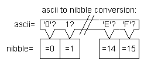
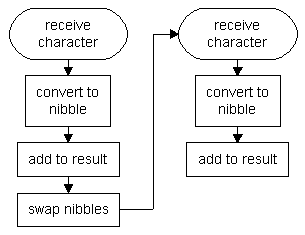

For the conversion from ASCII coded hex to int we first need some code that converts one ASCII character (which represents one hex nibble) to its decimal value. 'A' -> 10. This can't (or shouldn't) be done with a lookup table, because the ASCII value of 'A' is bigger than the size of efficient code doing the same thing. Therefore, the lookup table would also be quite big. So, it's better to choose the case structure.
Then the second nibble is converted in the same way and the two nibbles are combined to form one int.

This conversion is done for the two nibble characters. These are then combined in one byte:

Maybe the nibbles have to be swapped again, depending on how the two nibbles were sent: If the high nibble was sent first, the received byte can left as it is: The high nibble was added, the nibbles were swapped and then the low nibble was added.
Consequently, if the low nibble is sent first, the nibbles have to be swapped again.